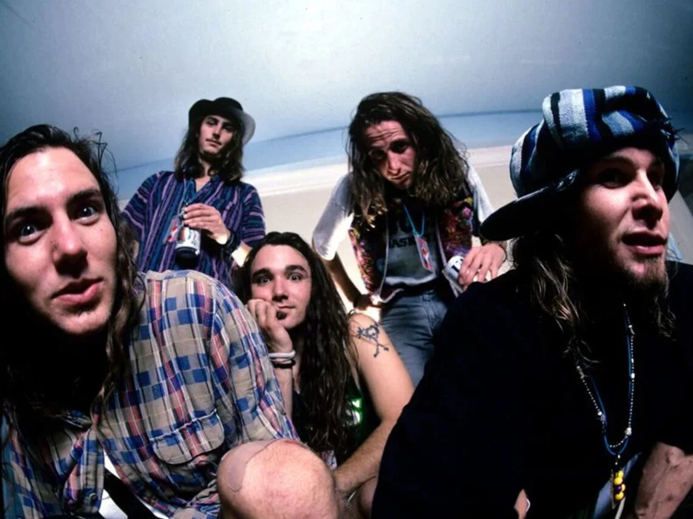
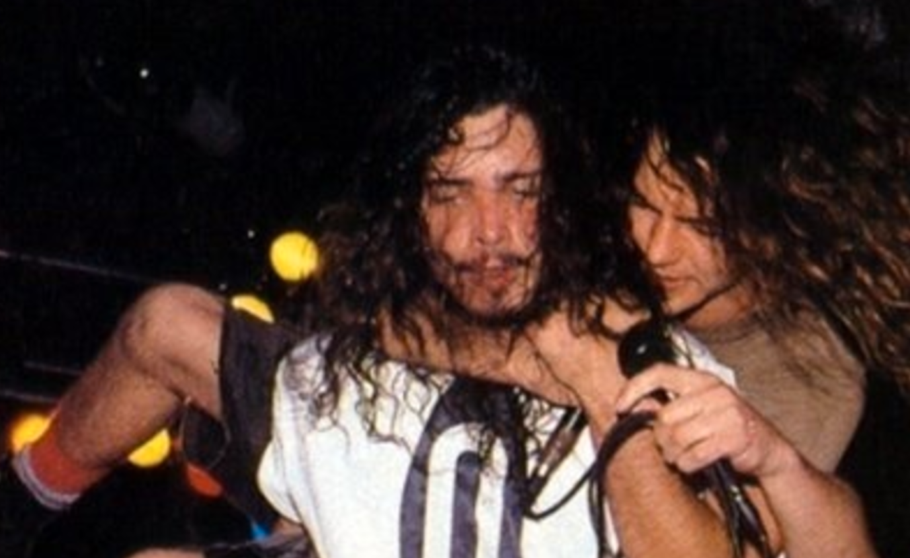
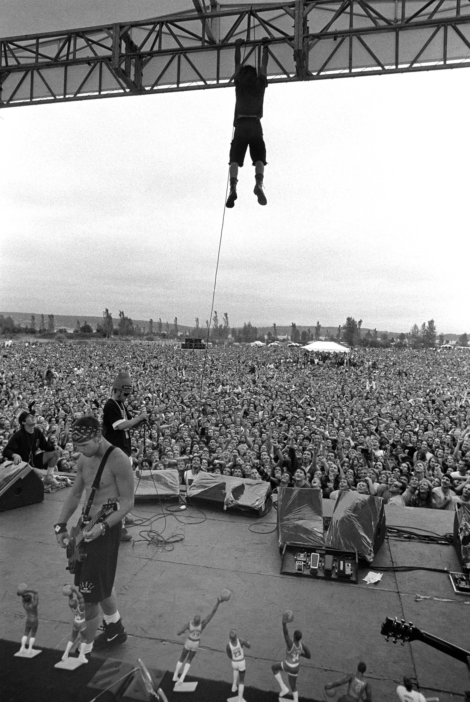

Pearl Jam! Pearl Jam! Pearl Jam! One of my favorite bands ever.
Pearl Jam is a grunge band formed in Seattle, WA in 1990. Known for their rough sound and eclectic stage presence, they continue to tour and bless the world with their genre-defining sound.
The group formed after the death of Andrew Wood, the frontman of iconic 80s band Mother Love Bone.
Click here to learn more about the band.


